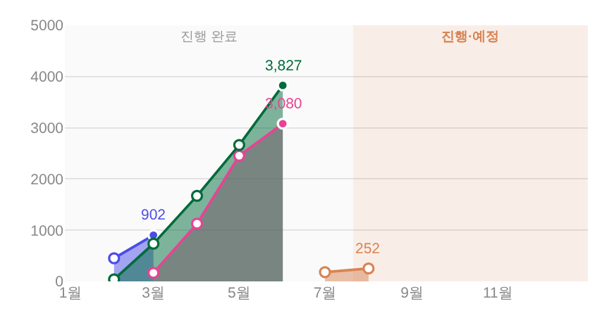

기획 전시 — 종료 월(최종)만 찬 동그라미 + 고유색 50% 누적 집계 면 전후
지시(운영자 260805 2차) ① 「지금 수정한 것도 맨 마지막이 아니면 빈 동그라미로(테두리로 감쌈) — 맨 마지막 = 종료 월(최종)」
② 「저거 뒤에 투명도 50% 정도로 전시 고유색 사용해서 누적 집계 차트 — 전시별로 분리하되 복잡하지 않게」
③ 「면과 꺾은선을 같이 더 살릴 방향 제안」 · 대상 = _bizDrawExhibMonthly · 화면 = tools/scratch/shot_exmonthly.mjs 1920×1080 · 값 = 거울 실측 · 실API·PII 미접촉.
1. 전 · 후
전 = git show HEAD:index.html(직전 머지 #662 상태) · 후 = 작업트리. 같은 데이터·같은 뷰포트.
전 — 종료 전시 = 전 점 채움 · 면 없음

후 — 채움 = 종료 월 한 점뿐(902·3,827·3,080 자리) · 나머지 전부 빈 동그라미 · 선 뒤 고유색 50% 누적 면

2. 점 채움 규칙 (DOM 실측 — first/last 분리)
| 전시 | 상태 | 중간 달(first) | 마지막 점(last) |
|---|---|---|---|
| 숨 쉬는 SUM | 진행중 | 빈(흰 채움 + 주황 테두리) | 빈 — 종료 월이 아직 없다 |
| → 프리뷰 | 종료 | 빈(흰 + 파랑 테두리) | 채움(파랑 + 흰 테두리) |
| → 섬냥이 in 장도 | 종료 | 빈 | 채움 |
| → 어린이미술전 | 종료 | 빈 | 채움 |
- 뜻: 찬 동그라미 = 「이 전시의 최종 확정치」 딱 한 점 — 궤적의 나머지는 과정이라 테두리만. 진행중 전시는 아직 최종이 없어 전부 빈 점.
3. 누적 집계 면 — 전시별 분리 · 고유색 50%
- 구현 = 각 전시 누계선 아래를
fill:'tozeroy'로 채움 · 색 = 그 전시 고유색의 알파 0.5(_yrHexA— 기틀 §3.5② 같은 토큰 알파 변주 = 새 색 0) · 실측 fill 4장 = 주황·파랑·장도핑크·7층초록. - 면엔 윤곽·호버 없음 — 경계는 위 꺾은선이 그 자체고, 수치는 종전대로 점 툴팁만(「선 올릴때만」 유지). 한 달짜리 전시(점 1개)는 면이 성립하지 않아 생략.
- 층 순서 = 면 전체 → 선 전체(면이 절대 선·점·숫자를 못 가린다) · 각 층 안에서는 종전 「끝난 전시가 위」 유지.
③ 면 + 꺾은선을 같이 살리는 방향(제안). 지금 구조는 네 층이 서로 다른 질문에 답한다 —
면 = 「규모(부피)가 어느 정도였나」 · 선 = 「어떤 속도로 쌓였나」 · 빈/찬 점 = 「끝났나, 차는 중인가」 · 꼭자락 숫자 = 「최종 몇 명인가」.
이 역할 분담이 유지되는 한 서로 싸우지 않습니다. 더 살리려면(전부 한 줄짜리 조정):
① 동시 진행이 3건+로 늘어 겹침이 탁해지면 면 알파만 50→30~35%로 한 단 내리기(선·점·숫자는 그대로 = 구조 무변)
② 진행중 전시 면만 반 단 옅게(예: 종료 50% · 진행 35%) — 점의 빈/찬 규칙이 면에도 이어져 「확정 부피 vs 차는 중」이 면만 봐도 갈림
③ 겹침 구간의 색 혼합은 「동시 진행」 표시로 그대로 두기 — 경계선·패턴 추가는 「복잡하지 않게」 축에서 비추천.
4. 게이트
check_design.py✓ raw hex 1578/1578 무변 · 신규 색·토큰·:root0(면 = 기존 고유색 알파 변주 · 빈 점 = 기존--surface-solid)npm run check✓ ·smoke:layout✓ · 실렌더 pageerror 0 · 면 4 · 선 4 · 점 13 · 값 라벨 = 꼭자락 4개 유지